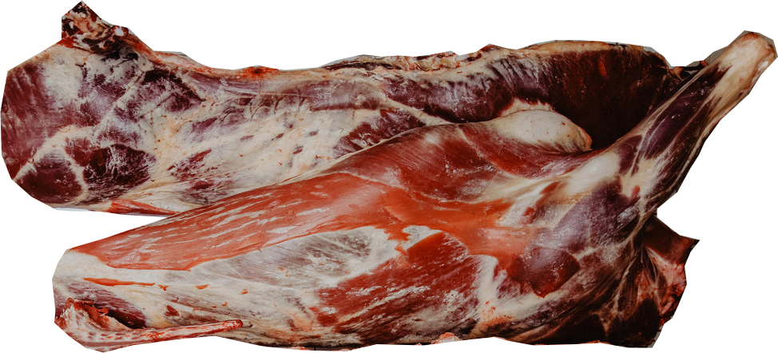

On Nov. 24, Dave and I tried to fly out to San Ramon on an air-taxi. When we got on the plane, I was surprised to be sitting on large pieces of cow, with just a layer of cardboard between me and the hunks of quivering flesh. Maybe I shouldn't have been surprised. Beef was one of the main cargo items out of that agricultural area.
The day was pretty cloudy, and when we thought we were getting close to the destination, the pilot slowly descended between mountains, trying to get below the clouds. We were all intently scanning below, trying to find the airport.
I happened to look up, saw we were about to crash into a mountain, frantically tapped the pilot on the shoulder, and pointed toward the mountain. He made a hard turn, avoided the mountain and decided to head back. We were not charged for that round trip flight and managed to get out OK the next clear day, on those still-quivering hunks of flesh.